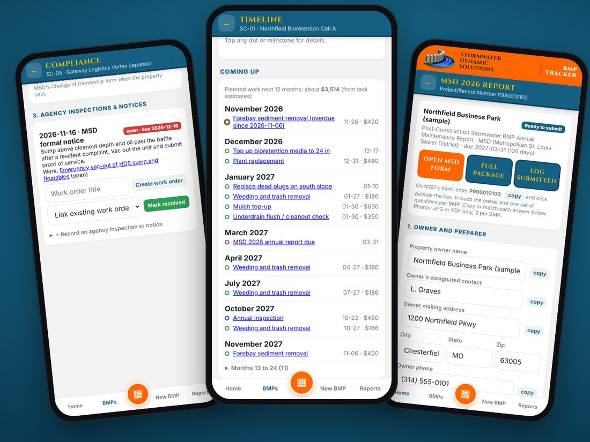
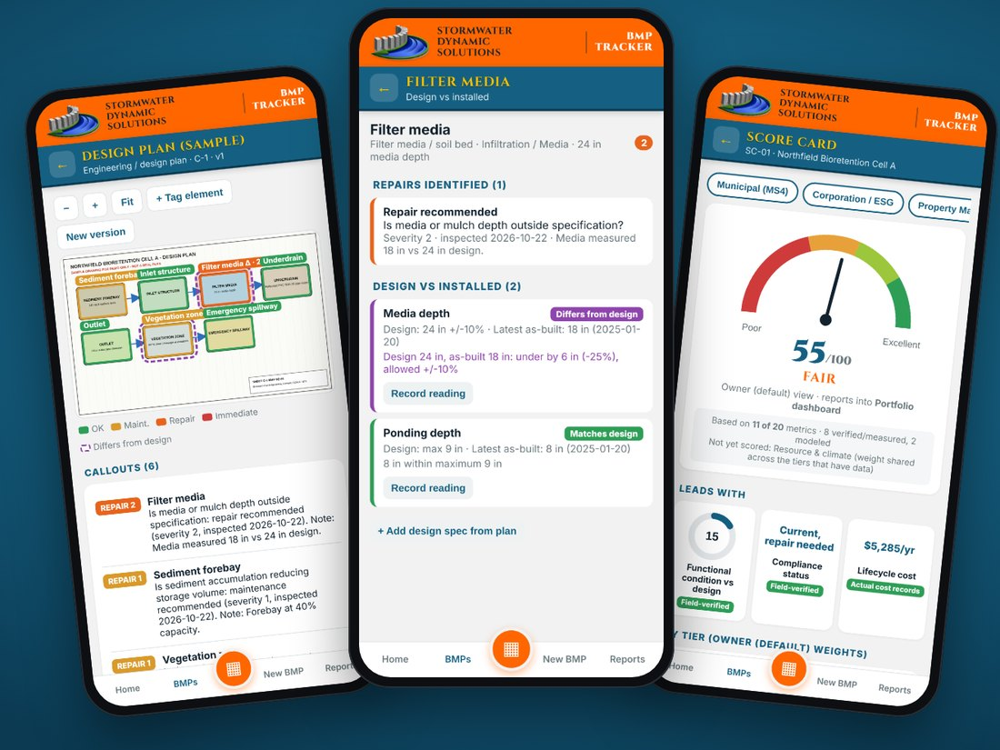
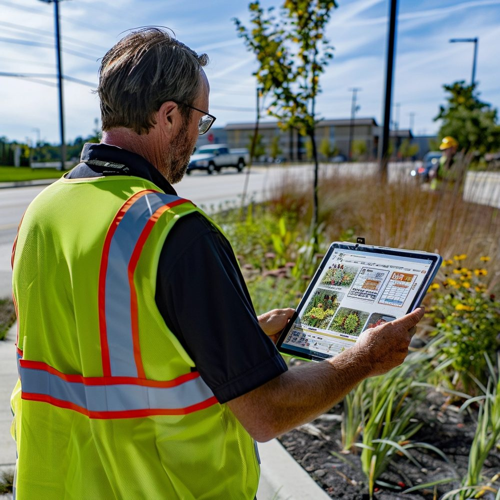
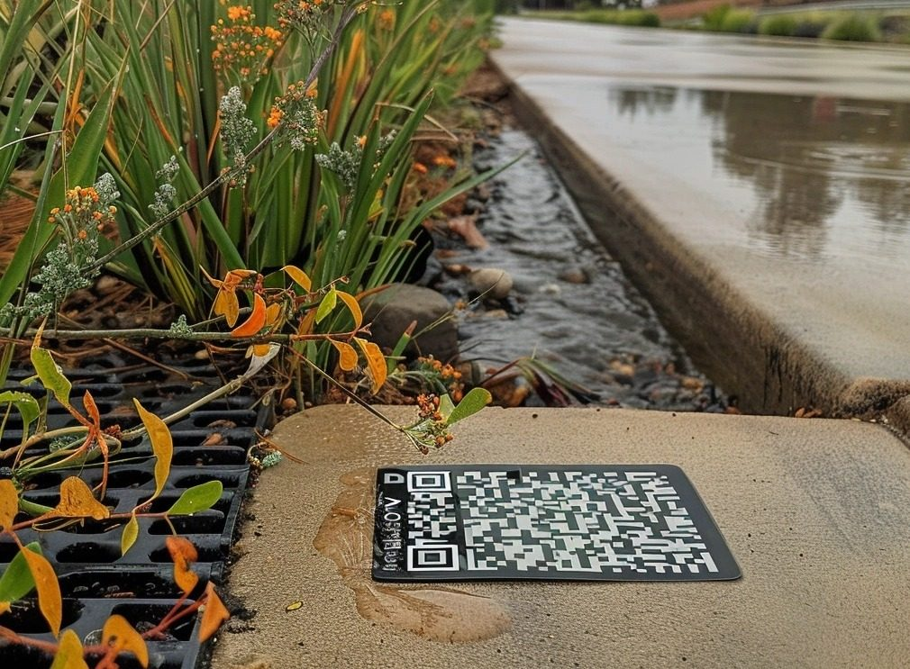
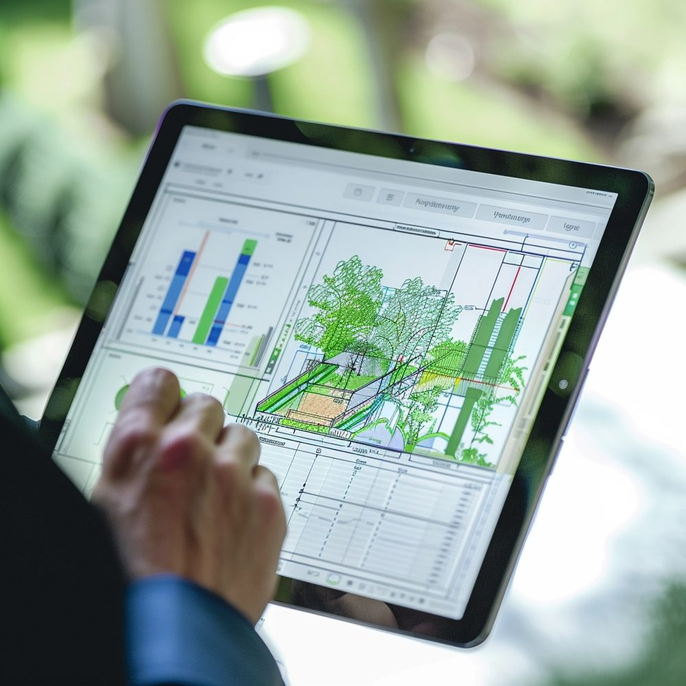
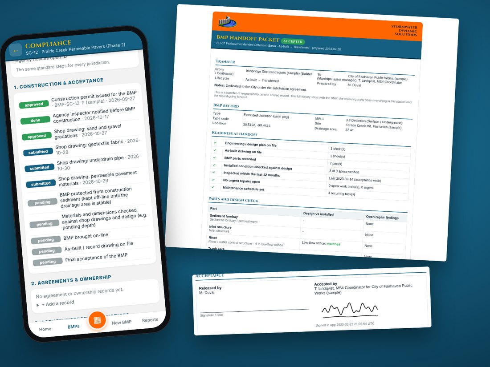

The SDS BMP Tracker
Stormwater asset management from design through long-term maintenance. One continuous record for every BMP, across every site and every jurisdiction in your portfolio.
- Field inspections
- Plans and as-builts
- ESG Score Card
- Agency annual reports
- Lifecycle timeline
- Costs and invoices

Design to decades of maintenance. One record.
Every BMP carries a lifecycle timeline covering design and permits, construction, inspections, maintenance and repairs, agency reporting and ownership handoffs.

- DesignDesign data, location and maintenance requirements captured before construction.
- BuildConstruction and inspection records establish a verified as-built condition.
- TransferA complete, tagged asset record transfers to the owner at turnover.
- MaintainInspections, work orders, photo documentation and agency-ready reporting.
Portfolio visibility
Condition, inspection history and open work orders for every asset at every site.
Regional compliance, standardized insight
Inspections follow each jurisdiction's requirements. Scorecards and notifications are standardized across the portfolio.
Desktop and mobile
Desktop for program management. Mobile for field crews, with QR-linked asset records.



QR-linked asset tracking
Each asset carries a durable QR marker linked to its SDS BMP Tracker record, giving field crews immediate access to asset type, inspection history and scheduled work.
- Inventory and tagEvery BMP located and marked.
- Field inspectionFindings and photos attach directly to the asset record.
- MaintenanceWork orders logged with before and after documentation.
- ReportingAgency-ready reports and maintenance history for capital planning.

Records that transfer
Construction acceptance, as-built checks and a signed handoff packet with a readiness checklist, so responsibility moves with a complete record.
Built for enterprise stormwater programs
Field inspections
Jurisdiction-specific checklists with severity ratings, corrective actions, notes and photos.
Plans and as-builts
Engineering, as-built and planting plans, with repairs and design differences highlighted.
ESG Score Card
Performance and sustainability scores by stakeholder, with evidence levels.
Agency reporting
Annual reports and agency checklist formats produced from field records.
Lifecycle timeline
Design, construction, inspections, maintenance and ownership handoffs on one timeline.
Costs and invoices
Lifecycle cost tracking from actual cost records.